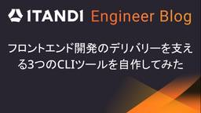
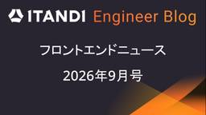

ITANDI Engineer Blog
https://tech.itandi.co.jp/
ITANDI Engineer Blog
フィード

フロントエンド開発のデリバリーを支える3つのCLIツールを自作してみた
ITANDI Engineer Blog
はじめに こんにちは！イタンジ株式会社のFrontendチームに所属している西野です。 以前の記事 で @itandi/tools のReact・TypeScript向け機能を紹介しました。 一方で @itandi/tools にはCLIツールも存在します。 ITANDI BB UI や ITANDI QC などのフロントエンド開発では、例えば下記のような問題が発生することがあります。 意図しない見た目の変更 ディレクトリ構成のばらつき GitHub Actions Workflowの不備 そこで、こうした問題をできるだけ早い段階で機械的に検知できるように、CLIツールを整備してきました。 今…
5日前

フロントエンドニュース2026年9月号
ITANDI Engineer Blog
はじめに こんにちは！Frontendチームの薄羽です。8月が思ったより暑くない気がしています☀️ useReactCompiler | Biome v2.5.8 から useReactCompiler が使えるようになり、React Compilerのルールに則っているかをBiomeでチェックできるようになった！！ React Compiler Support | The JavaScript Oxidation Compiler OxcがReact Compilerをサポートした React CompilerをOxc AST上で直接動作させ、Babel版と比べて10倍以上高速な変換を実現し…
7日前

JSTQB FL取得を通じて得た知識をチーム運営に還元した話
ITANDI Engineer Blog
こんにちは！イタンジでエンジニアリングマネージャーをしている、兼田（かねだ）と申します。 子ども2人を育てながら、4プロダクト・8名のメンバーを持つユニットのマネージャーとして毎日全力投球しております。 はじめに 先日、JSTQB FL（JSTQB Foundation Level / Certified Tester Foundation Level）を取得しました。 JSTQB FLとは JSTQB FLは、国際的なソフトウェアテスト資格団体であるISTQB（International Software Testing Qualifications Board）が認定する「Certifie…
1ヶ月前
Slack・Jira・サポートサイトを横断する CS エージェントを Agent Search + Google ADK で作った
ITANDI Engineer Blog
はじめに 皆さんこんにちは。イタンジ株式会社 データチームの奥井です。 本記事では、Slack・Jira・サポートサイトに分散した情報を横断検索する CS エージェントを Agent Search（旧称: Vertex AI Search）と Google ADK で構築した取り組みをご紹介します。 社内の情報が複数のツールに分散していて、回答するたびに必要な情報を探し回っている、という課題感をお持ちの方の参考になれば幸いです。 ※弊社では複数の SaaS プロダクトを提供していますが、本記事ではそのうちの1つを対象としています。 課題 弊社では SaaS プロダクトを提供しており、CS チー…
1ヶ月前
フロントエンドニュース2026年8月号
ITANDI Engineer Blog
はじめに こんにちは！Frontendチームの西野です。東京は梅雨明けが近づいてまいりました 🌞 Announcing TypeScript 7.0 - TypeScript TypeScript 7.0リリース Go言語で構築されたTypeScriptのネイティブポート版で、以前より10倍高速化された typescript-eslint などのプログラム向けのAPIはまだ公開されておらず、実装予定である7.1が公開されるまで @typescript/typescript6 を使って6.0と並行運用することが推奨されている 「X has quietly launched its complet…
2ヶ月前
SWRでAPI Hooksを都度定義しないための型安全なcreateKeyFetcher
ITANDI Engineer Blog
はじめに こんにちは！Frontendチームの薄羽です。イタンジではReactのデータフェッチングライブラリとして、@tanstack/react-query と swr を使用しています。各システムの開発開始時期が異なり、それぞれの開始時点での技術選定の結果、2つのライブラリが使われています。現在は、使い勝手の良さからswrへ統一する方針をFrontendチームで決定し、移行を進めています。 API Hookを都度定義することの課題 イタンジでは、APIを呼ぶHooks（API Hooks）を都度定義しています。たとえば、物件情報を取得するHookは以下のように定義されます。 const u…
2ヶ月前
E2Eテストの安定性を高めるTypeScript製パッケージ @itandi/playwright
ITANDI Engineer Blog
はじめに こんにちは！イタンジ株式会社のFrontendチームに所属している西野です。 昨年末に「ITANDI QC」というE2Eテスト基盤を作成し、今年から本格的にE2Eテストを拡充させています。 E2Eテストを何も考慮せずに追加していくと、アプリケーションコードの変更によってすぐに壊れてしまうテストが量産されてしまいます。 そのため、修正する必要のない変更に強いテストを書く方法を検討しましたが、コンポーネントを操作するテストコードの書き方が課題となりました。 本記事ではFrontendチームがE2Eテストの安定性を高めるために取り組んでいる内容を紹介します。 コンポーネント操作の標準化 I…
2ヶ月前
フロントエンドニュース2026年7月号
ITANDI Engineer Blog
はじめに こんにちは！Frontendチームの薄羽です。サンダル勢なので梅雨が辛いです ☔️ TSKaigi 2026 TypeScriptをテーマにしたカンファレンス （会社としてはスポンサーではないですが、個人的に応援しています） 気になった発表: Oxlintはいかにしてtsgolintのlint ruleを呼び出しているのか ちなみにイタンジは割と前からBiomeに傾けています 気になった記事: TSKaigi 2026 の発表資料の体感半数以上が AI 生成感あるものだった AIダメ、というよりは聴き手に伝わるように資料を作りましょうという理解です 明日は我が身だと思うので、PRの文…
2ヶ月前
感情論にサヨナラ。技術選定のトレードオフを冷徹に可視化する「意思決定ログ」のススメ
ITANDI Engineer Blog
こんにちは！物件チームでエンジニアをしているユフィです。 私たちのチームでは、日々多くの物件情報を扱う「物件システム」を開発しています。エンジニアリングの世界において、私たちは日頃から「技術選定」や「アーキテクチャ設計」などあらゆる選択肢を考慮した上で、意思決定を行っています。 「この機能のバッチ処理、どう実装するのがベストだろう？」 「外部APIとの連携部分、どのGemを採用すべきか、あるいは自作すべきか」 こうした議論を進める中で、メンバー間で活発に意見交換ができるのは素晴らしいことです。しかし、以下のような課題を感じたことはありませんか？ メンバー間でしっかり話し合って決めたはずなのに、…
3ヶ月前
不動産売買プロダクトのフロントエンド環境を"ルールごと"整備した話 ── UIライブラリ選定とスタイリング設計
ITANDI Engineer Blog
はじめに こんにちは！イタンジ株式会社「ITANDI 売買支援」開発チームの鶴田です。 この記事では、売買プロダクトの新規ページ開発にあたり、UIライブラリの選定からスタイリングルールの策定、さらにそのルールをLinterやAIコーディング支援ツール向けのルール定義で守れるようにした取り組みを紹介します。 技術選定をして終わりではなく、ライブラリの思想を理解し、チームの運用まで含めて設計することを意識しました。 対象読者: フロントエンドのUI基盤をこれから整備しようとしているエンジニア デザインシステムとの接続を意識したライブラリ選定に興味がある方 AI時代のコーディングルールの伝え方を模索…
3ヶ月前
フロントエンドニュース2026年6月号
ITANDI Engineer Blog
はじめに こんにちは！Frontendチームの西野です。先月から始まった フロントエンドニュースまとめ、今月は私が担当します。最近気になったフロントエンド周辺のニュースをまとめていきます！ Node.js 26.0.0 (Current) 次期 LTS の Current リリース Temporal が追加された 🎉 pnpm 11.0 サプライチェーン攻撃を防ぐ設定がデフォルトでオンになった pnpm publish などがnpm CLIに依存しなくなった pnpmの設定は .npmrc ではなく pnpm-workspace.yaml に書くようになった Release v16.2.6 ·…
3ヶ月前
複数プロダクトのコードレビューで見えてきた課題を解消する社内パッケージ @itandi/tools
ITANDI Engineer Blog
はじめに こんにちは！イタンジ株式会社のFrontendチームに所属している西野です。 Frontendチームでは月100件以上、複数プロダクトのコードレビューを担当しています。 レビューを重ねる中で、多くのプロダクトに共通する課題が見えてきました。たとえば、「日付のフォーマットが統一されていない」や「Next.jsのPages Routerの仕様に苦しめられている」などです。同様の処理が各プロダクトで個別に実装されていたり、同じ指摘を繰り返したりしていました。 そこで、重複している処理を共通パッケージとして整備すれば課題を解決できるのでは？と思い、誕生したのが @itandi/tools で…
4ヶ月前
社内LT会が熱い！メンバーの学びが深まったおすすめLT発表 4選
ITANDI Engineer Blog
はじめに こんにちは！イタンジの賃貸管理支援プロダクトを開発している、「Unit5」という開発チームです。 Unit5では、普段の業務においてメンバーは開発業務に携わる時間が多いので、自分の考えや学んだことを発表する場が少ないなと以前から感じていました。 また、Unit5というユニットは、いくつかのプロダクトを開発する複数のチームのまとまりでもあることから同じユニットなのにチーム間の情報共有が足りていないという課題も潜在していました。 これらの課題を解決すべく、2025年8月から社内（Unit内）のLT会の取り組みを開始しました。 下記のようなスタイルで実施しています。 発表形式 テーマは何で…
4ヶ月前
Storybook Play functionからPlaywrightへ移行して得た「正しさ」と「書きやすさ」
ITANDI Engineer Blog
はじめに こんにちは！Frontendチームの薄羽です。 イタンジのデザインシステムはReactコンポーネントになっており、Storybookで管理されています。1年前の記事でPlay functionでインタラクションテストを行っていると紹介しましたが、現在はPlaywrightを使ってテストを行っています（実は1年前から移行中でした）！ Play functionの問題点 <DropZone>（ファイルをドラッグ&ドロップできるコンポーネント）のテストで storybook/test の userEvent.upload() を使用した後、コンポーネント内部の input.files が書…
4ヶ月前
RubyKaigi 2026 セッションレポート in 函館
ITANDI Engineer Blog
はじめに こんにちは、ITANDI株式会社でエンジニアをしているたのもきです。 2026年4月22日〜24日にかけて函館で開催された「RubyKaigi 2026」に参加してきました！ さすが北海道ということもあり、会場が2つになり、最大規模の開催となりました。 私自身今回2回目の参加でしたが、前回は内容自体も難しくかつ英語での発表だったこともあり、あえなく撃沈しておりました。 今回はリベンジ！といきたいところでしたが、やはり内容は難しく、全てを理解することはできませんでした。 だがしかーし！メモ内容や公開していただいているスライド、自身の感じたことを元にAIと深掘りすることで、ある程度自信を…
4ヶ月前
【RubyKaigi 2026レポート】 Ruby::Boxで考える、Net::HTTPへのモンキーパッチの閉じ込め方
ITANDI Engineer Blog
精算管理システムの開発を担当しているjuriです。 2026年4月22日〜24日に函館で開催された、RubyKaigi 2026に参加してきました。 函館行きの飛行機の欠航がいくつか出るなど嵐を呼ぶ幕開けでしたが（東北・北海道新幹線「はやぶさ」の存在に感謝です）、 嵐を吹き飛ばすような勢いの熱いセッションの数々とスポンサーさんのブースの熱狂により、大変充実した3日間となりました！ 特に初日のキーノートThe Journey of Box Buildingで @tagomorisさんから発表のあった Ruby::Box に興味を持ち、「自社のコードベースで活かせる場面がありそうか」を考えながら触…
4ヶ月前
フロントエンドニュース2026年5月号
ITANDI Engineer Blog
はじめに こんにちは！Frontendチームの薄羽です。今月からFrontendチームで気になったフロントエンドニュース（と言いつつ、Node.jsなども触れます）をまとめていきます！ axios Compromised on npm - Malicious Versions Drop Remote Access Trojan axiosのメインメンテナーのアカウントが乗っ取られ、悪意あるバージョンが公開された pnpmのminimumReleaseAgeを設定して公開直後のバージョンをインストールさせないことや、npmの --ignore-scripts によって postinstall を…
4ヶ月前
「手戻り」を仕組みでなくせる。ITANDI 賃貸仲介チームが辿り着いた爆速開発の最適解
ITANDI Engineer Blog
はじめに こんにちは。「ITANDI 賃貸仲介」開発チームの藤井です。 私たちのチームでは、現在サイクルタイムの中央値が「1.4時間」という数値を記録しています。さらに驚くべきことに、レビューが依頼されてから承認（Approve）されるまでの時間は中央値0.0時間、つまりほぼ即座に承認されています。 「そんなの、レビューを適当にやっているだけじゃないか？」と思われるかもしれません。しかし、実態はその真逆です。 品質を担保したまま、なぜこれほどの流動性を実現できているのか。本記事では、個人の技術力に頼らない仕組み（合意とチケット運用）の力についてご紹介します。 かつての課題: 開発の「淀み」 以…
5ヶ月前
プロポクラウドのTerraformコードをイタンジの標準構成に移設した話
ITANDI Engineer Blog
はじめに こんにちは、イタンジ株式会社インフラチームの清水です。 イタンジには 20 個を超える AWS アカウントがあり、10 チーム以上の開発チームがイタンジのプロダクト開発を行っています。インフラチームは、開発チームと一緒にプロダクトのインフラに関わる設計・運用・障害対応を実施しており、チームは3名で構成されています。 インフラチームでは、各プロダクトのインフラの設計・運用・招待対応の他に、プロダクト全体のインフラに関わる標準化を進めており、デプロイの標準化、監視の標準化、CI・CDの標準化、開発に関わるメトリクス分析の標準化などを行っています。 標準化することで、少し柔軟性は低下するか…
5ヶ月前
TypeScript 6.0に上げたかった
ITANDI Engineer Blog
はじめに こんにちは！Frontendチームの薄羽です。TypeScript 6.0がリリースされました🎉内部向けに6.0に上げるまでの手順を書こうと思いましたが、せっかくなら詰まったところを全世界に共有した方が良いと思い、テックブログにします。エイプリルフールに執筆していたので、タイトルを「TypeScript 6億」にしようと思いましたが、全然面白くなかったためやめました。あと、タイトルにもありますが上げられなかったです。 TypeScript 6.0とは 詳しくは公式ブログを参照してください！TypeScriptは7.0からGo言語での実装になります。6.0は7.0に移行するためにいくつ…
5ヶ月前
Frontendチームが取り組んでいること16選
ITANDI Engineer Blog
はじめに こんにちは！Frontendチームの薄羽です。イタンジはRubyKaigiのスポンサーになるなど、Rubyに力を入れている会社だと思われていますが、実はフロントエンドも頑張っています！そこで、頑張りをみなさんに知ってもらうために、今回は「Frontendチームが取り組んでいること16選」を紹介します！ Frontendチームとは イタンジのFrontendチームにはエンジニアとデザイナーが所属しており、「プロダクトUIを横断的に見ること」を目的としています。エンジニアはプロダクトUIを構築するコードとそれを守るテスト自体の品質管理、デザイナーはUXも含めたプロダクトのデザインを頑張っ…
5ヶ月前
要件定義からデリバリーまで！イタンジ精算管理チームの開発プロセス改善
ITANDI Engineer Blog
はじめに こんにちは。多種多様なメンバーが集まる、いつも賑やかなイタンジ精算管理チームです。 私たちが日々開発しているのは、その名の通り 精算 を 管理 するシステムであり、 お金を扱うがゆえに、とても繊細で1ミリのズレも許されないプロダクトです。 品質を担保するのはもちろんのこと、ドメイン知識が複雑であるがゆえに、チーム内での漏れなく的確なコミュニケーションが求められます。 一方で、プロダクトの価値をさらに提供していくためには、開発スピードも上げていかなければならないというジレンマを日々抱えています。 品質も落とせない、でも早く開発してリリースしたい... しかし、人間だけではこの両方を追い…
5ヶ月前
PlaywrightでFlaky Testを減らすための実践知
ITANDI Engineer Blog
こんにちは、賃貸募集支援事業プロダクト開発チームの張(チョウ)です。普段は賃貸物件への申込みをWebで完結させるプロダクトの開発をしています。私たちのチームは昨年末からPlaywrightを導入し、E2Eテストの運用を開始しましたが、テスト数が増加するにつれて、どうしても避けて通れない「Flaky Test（不安定なテスト）」の問題に直面しました。 Flakyテストとは Google Testing Blog (2016) によると、Flaky Testは「全く同じコードであるにもかかわらず、成功と失敗の両方の結果を示すテスト」と定義されています。この不安定さの背景には、並行処理による競合、実…
5ヶ月前
Railsモジュラーモノリスの依存関係を見える化する ―packwerkを物件連動統括システムに導入した話
ITANDI Engineer Blog
はじめに こんにちは、イタンジ株式会社でエンジニアをしている中山です。物件連動チームに所属していて、外部のシステムから送られてくる物件情報を取り込む物件基盤の開発を担当しております。 物件連動チームでは、さまざまなCSV形式で送られてくる物件情報を取り込む処理や、それらの情報をさまざまな外部システム向けに出稿する処理を担当しています。これらの仕組みを総称して「物件連動システム」と呼んでいます。 この記事では、複数の物件連動システムを一つのRailsアプリ（物件連動統括システム）で管理するにあたって、packwerk および packwerk-extensions を導入した経緯と、各設定項目の…
6ヶ月前
マルチプロダクトの品質を支えるテスト基盤「ITANDI QC」の紹介
ITANDI Engineer Blog
こんにちは！イタンジ株式会社のフロントエンドチームに所属している西野です。 本記事では昨年末から始動したプロダクト共通の品質管理基盤「ITANDI QC」について紹介します。 ITANDI QCとは イタンジではRSpecやデザインシステム内のコンポーネントテストは充実しています。しかしE2Eテストとリグレッションテストは不足しています。 イタンジのサービスは、別リポジトリで開発される複数のプロダクトで構成されています。 そのため、ユーザーシナリオを1つ完結させるためには複数のプロダクト間を遷移する必要があります。 各リポジトリでもローカル開発環境と検証環境は繋がっているため横断的なテストは可…
6ヶ月前
1,600テーブルを支えるデータ転送の最適化：3つのパターンによるBigQuery集約の実践
ITANDI Engineer Blog
はじめに イタンジ株式会社のデータチームでマネージャーをしている山崎です。 私のチームで整備してきたデータ基盤は社内のKPIダッシュボードや問い合わせの調査対応で日々使われています。また、基盤側で作った成果物をプロダクトで活用したり、お客様向けのデータをさまざまな形で届けたりするための土台にもなっています。 今回は稼働中のデータベースからBigQueryへデータを集約する仕組みの全体像と、テーブルの規模や更新頻度に合わせて使い分けている3つの転送パターンを紹介します。 システム全体像 イタンジのデータ基盤はAirflowとBigQueryを中心にした構成です。 現在、プロダクトのバックエンドと…
7ヶ月前
sidekiq-schedulerで定期ジョブが重複実行される原因を調査してみた
ITANDI Engineer Blog
はじめに こんにちは、イタンジ株式会社でエンジニアをしている小林です。不動産仲介会社向けの営業支援システムであるITANDI 賃貸仲介の開発をしています。 ITANDI 賃貸仲介では、Sidekiqを用いてバックグラウンドジョブの処理を行っています。その中で、定期的に実行したいジョブにはsidekiq-schedulerを利用しています。 最近、sidekiq-schedulerを用いた定期実行ジョブで予期しない動作に遭遇しました。定期実行についての設定ファイルで実行タイミングの指定にeveryを使用した場合、複数の実行環境(Sidekiqプロセス)すべてで定期実行ジョブが起動してしまうという…
7ヶ月前
Rails 8.1 Active Job Continuations: ジョブ再開の仕組みと挙動を追う
ITANDI Engineer Blog
こんにちは、イタンジ株式会社でエンジニアをしている磯谷です。 私は現在、物件情報を取り込むワークフローシステムの開発に携わっています。 そのアーキテクチャの再設計を検討する中で、Rails 8.1で導入されたActive Job Continuationsについて調査したので書いていきます。 はじめに これまでRailsにおいて、コンテナ環境でのデプロイと長時間ジョブの両立には、少なからず工夫が必要な場面がありました。コンテナのライフサイクルは短く、デプロイ時には古いコンテナが停止されます。長時間ジョブがその巻き添えになると、処理は強制終了され、最初からのやり直しが必要になります。 こうした課…
8ヶ月前
【参加レポート】Kaigi on Rails 2025で学んだRails開発の実践知
ITANDI Engineer Blog
はじめに こんにちは、ITANDI株式会社でエンジニアをしているたのもきです。 9月26日〜27日に行われた Kaigi on Rails 2025 に参加したので、参加レポートを書きました。 今年行われたRuby Kaigiに続き初参加だったのでソワソワしながら臨みました。 【祝】Kaigi on Rails初のスポンサー出展 セッションはHall Red、Hall Blueに別れて毎時間同時開催。毎回どちらのセッションに参加するか非常に悩むくらいどのセッションも魅力的な表題でした。できることなら影分身して両方のセッションを聴いてたかったです笑 その中でも印象に残ったセッションを今回はいくつ…
1年前
RailsのViewで作るPDF — Chromiumを活用した募集図面生成ロジック
ITANDI Engineer Blog
はじめに こんにちは、ITANDI株式会社でエンジニアをしている須田です。2023年に新卒で入社し、社会人・エンジニアともに3年目を迎えました。 普段は主に、Ruby on Railsを使用したバックエンド開発、およびNext.jsを使用したフロントエンド開発で、不動産管理会社様や仲介会社様が物件情報を管理するための「物件システム」の開発を担当しています。 先日、その開発業務の一環として「募集図面作成機能」をリリースしました。 本記事では、この機能で扱った「募集図面作成」という不動産業界特有の課題を、どのように解決したのか、その技術的なアプローチをご紹介します。 募集図面とは 今回ご紹介する機…
1年前